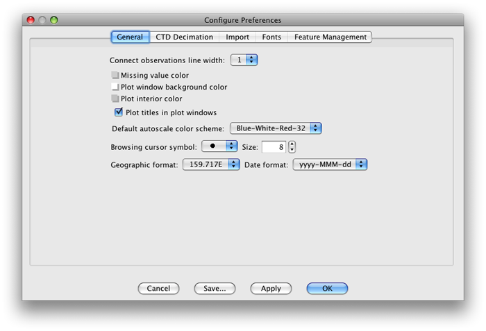
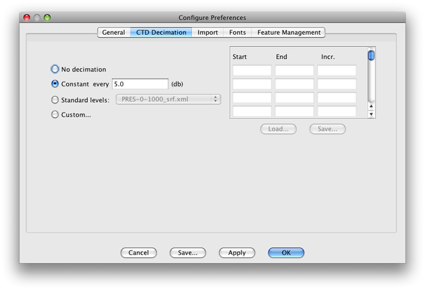
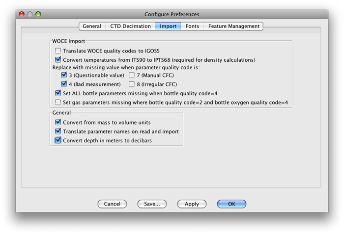
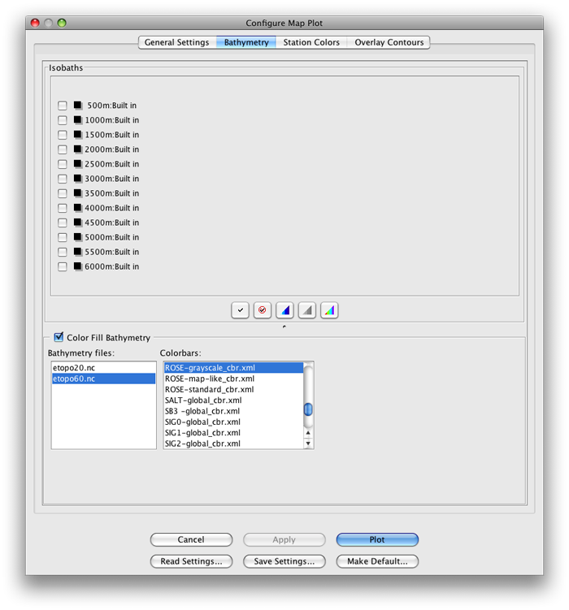
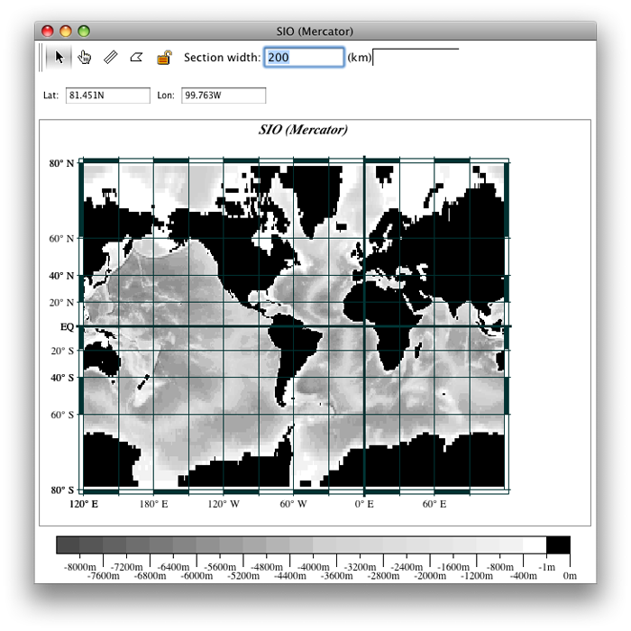
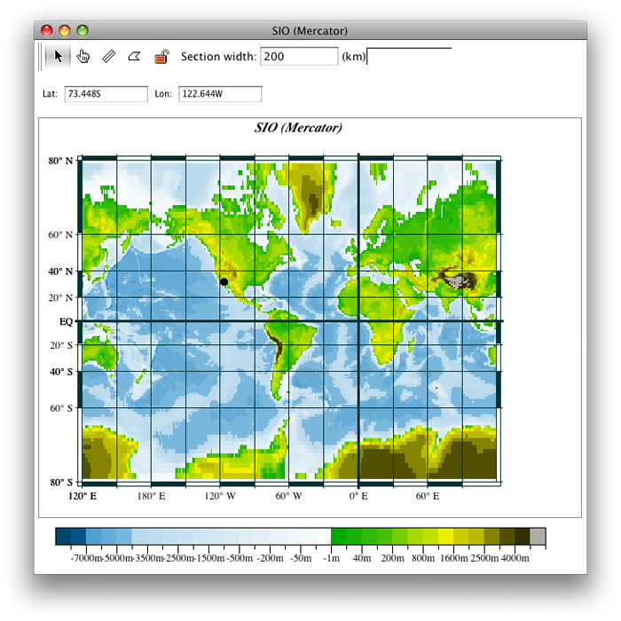

You can use Java OceanAtlas (JOA) to make global ocean maps similar to those in the DPO text.
JOA needs at least one data point before it will draw a map. We have provided the data file SIO.joa, with one data value at the location of the UCSD Scripps Institution of Oceanography. (You will create the mycity.joa file in Example 2E)
Files that may be needed or created in this example:
SIO.joa
mycity.joa
Exercise 2A-01: First Things First - Start JOA and Set JOA Preferences¶
Java OceanAtlas (JOA) is configured to have a specified appearance and a specified result for various actions (such as how it translates data files when it opens them), and some JOA features can be enabled/disabled. This configuration is handled via the JOA “Preferences” dialog box. We pre-configured JOA to fit the needs of DPO JOA Examples users. But if you are not dealing with a new/fresh copy of JOA, some previous user may have altered the pre-set Preferences. Here we will show the Preferences panels in our recommended configuration for the DPO JOA Examples, and briefly discuss some of the options should you later choose to change the Preferences.
Start JOA by double clicking on the JOA icon, or by whatever other means you start an application on your computer
Note
There is no big JOA window … all you will see when JOA is first opened is its menu bar, and maybe a blank window for a JOA feature we will ignore here.
The appearance of JOA when you first start it will be slightly different depending on the computer you use, but it will look something like the figure below (on Mac OS X).
The JOA “Preferences” menu selection is found under the “Java Ocean Atlas” menu:
Java OceanAtlas (JOA) has default actions and appearances that are configured via a Preferences dialog box. To edit these go to:
JavaOceanAtlas (from menu) → Preferences
Preference changes under the General panel

FIG 2a-02 The first panel, General, should look like this.¶
Connect observation line width:
As the value of the selected number increases, so does the width of the line
Default autoscale color scheme:
The default color scheme is Rainbow(inv)-32
The color scheme number refers to the number of divisions/contours in a given color bar
Blue-White-Red schemes are useful for showing where values are higher and lower than some in-between (white) numerical values
Rainbows give vivid color ranges
Rainbow(inv) inverts the order of the colors relative to the order of numerical contour values, compared to Rainbow
Preference changes under the CTD Decimation panel:

FIG 2a-03 The CTD decimation of the configure preferences dialog box¶
The CTD Decimation panel is only important when you are importing CTD data which are not already in a JOA binary data file (JOA binary format files have file extension .joa)
Selecting Constant every 10 (or 20) db is a good choice
Select No decimation if you want to import all levels of each new CTD data profile into JOA, This will result in a larger file than if the file were decimated
Preference changes under the Import panel:

FIG 2a-04 The import panel of the configure preferences dialog box¶
The Import panel is important if you are importing new data into JOA that are not already in JOA binary format (JOA binary format files have file extension .joa), which is an action not needed for the DPO JOA Examples. See the JOA User Guide for more information about these
The settings tell JOA what to do with various pieces of information in a text data file
The default settings are designed to weed out suspicious and bad data
JOA users intending to import their own data files should refer to the JOA User Guide
Preference changes under remaining panels:
The remaining Configure Preferences panels are not of direct concern to most working through the DPO JOA Examples
Note
When you save new or revised JOA preferences (or color bars, or interpolation level files, etc.), JOA will prompt you to save a file in the JOA_Support folder.
If there is already a file of that name in JOA_Support, JOA will ask if you really want to replace the file.
Yes, you usually want to replace it.
Changes made to JOA Configure Preferences - but not saved - will be enabled only through the current JOA session and then discarded when you quit JOA.
This can be handy if you wish to modify JOA behavior only for one JOA session.
Tip
Java OceanAtlas User Guide can be found in the JOA Application tab.
Exercise 2A-02: Ocean Maps - Making a Mercator Map¶
The Bathymetry panel should look like this by default; if not, change it to match:

FIG 2a-06 The Bathymetry panel of the Configure Map Plot panel¶
Click on the Plot button and JOA will draw a map plot looking like this:

FIG 2a-07 JOA map plot made with suggested settings¶
To change the appearance of this map to look more like the global ocean map figure in Chapter 2 of the DPO textbook:
With the map plot as the front-most window, bring up the Configure Map Plot dialog box so that you can change the characteristics of the plot.
To bring up the Configure Map Plot dialog box, either:
Double-click or control-click on a map plot
Or type [ctrl/cmd]-R or Edit → Edit: plotname when a map plot is the front-most window
Click on the Bathymetry panel in the dialog box to bring up the Bathymetry panel
Select the ROSE-map-like_cbr.xml color bar under Colorbars:
Click on OK to draw this plot:

FIG 2a-08 Mercator map plot with ROSE color scheme¶
The black dot on southern California is the location of the single coordinate in the SIO.joa data file, which is the location of the Scripps Institution of Oceanography.